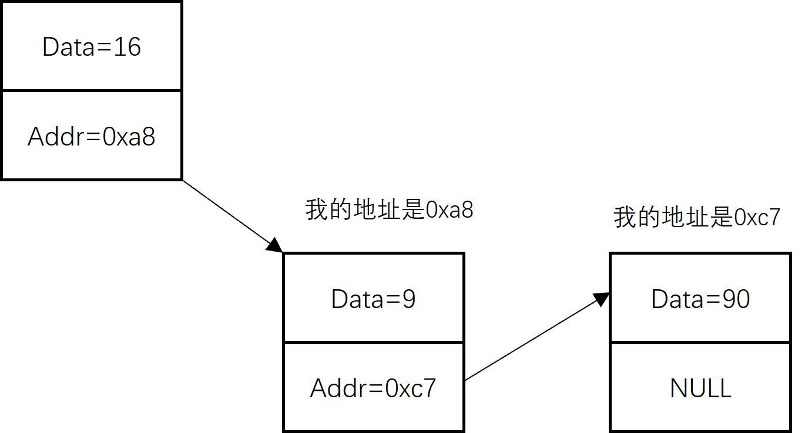
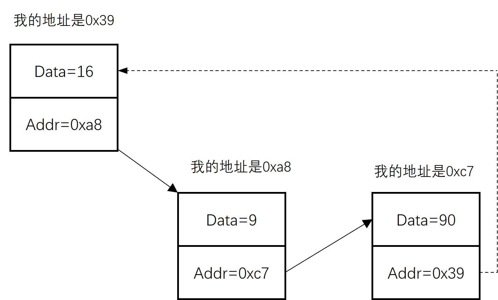
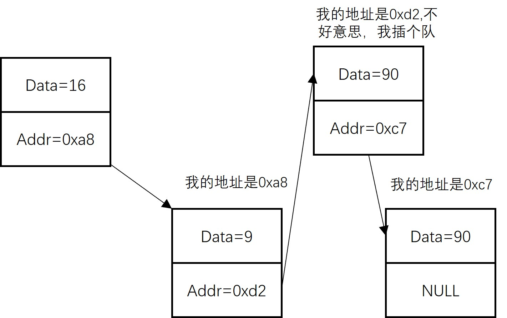

链表
- 链表的概念
- 链表的作用
- 链表与数组的区别
链表的概念
- 链表是物理存储单元上非连续的、非顺序的存储结构，数据元素的逻辑元素是通过链表的指针实现
- 链表由一系列结点（地址）生成，每个结点除了存储数据元素外，还存储了下一个结点的位置，而结点可动态生成
如下图所示，一个链表由多个结点构成，每个结点存储了一个数据元素和一个地址数据，这个地址数据就是下一个结点所在的位置，如果刚好是链表最后一个元素，也就是说没有下一个元素了，那么就为NULL

还有一种情况，链表尾巴可能继续指向链表的头部，就像贪吃蛇的尾巴咬住了头一样(虚线部分)，这便是循环链表

链表的作用
我们前面刚刚学过栈和队列，回想一下，栈和队列是不是很讲究顺序，栈是先入后出，队列则是先入先出，你只能按照这个顺序进出，考虑下这种情况，如果排队的时候有新来的同学有紧急情况需要插队(计算机偶尔会有这种任务)怎么处理呢？
因为队列中的个体都是顺序存储，也就是一个挨一个，计算机只能把后面的同学统一往后摞一个位置，再把需要插队的同学排进来，如果后面的同学很多，那么就非常耗时，而链表本身就是无序的，只需要修改对应位置的指针即可，像下面这样：

链表和数组区别
数组使用一块连续的地址去存储数据，而链表使用的是不连续的空间，相比较而言，增加或者删除中间某个元素效率高
链表每个结点不仅存储数据元素，还存储了下一个元素的地址，所以占用了至少两倍的空间
小结
习题
- 除了链表增删效率高外，你还能想到为什么需要链表吗？
- 使用链表增删数据元素一定比栈或队列高吗？
打赏
赠人玫瑰，手有余香。您的打赏是我们前进的动力！